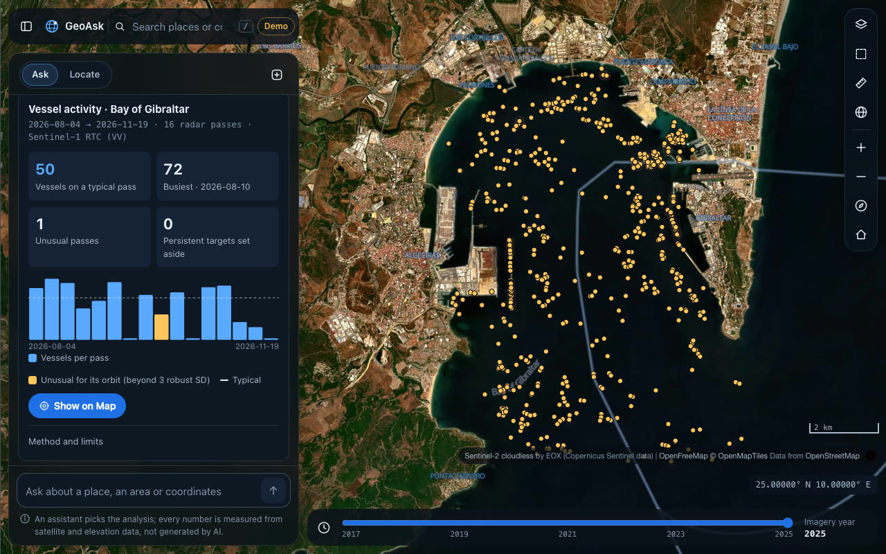
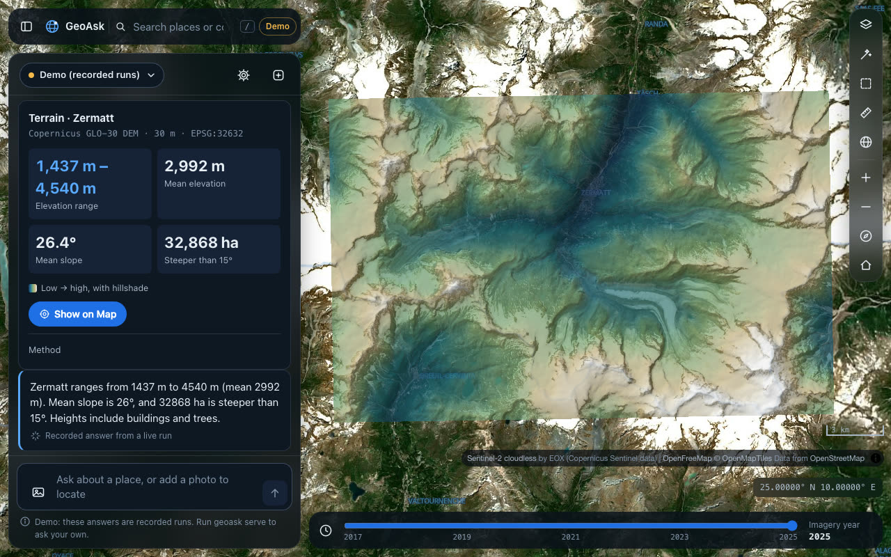
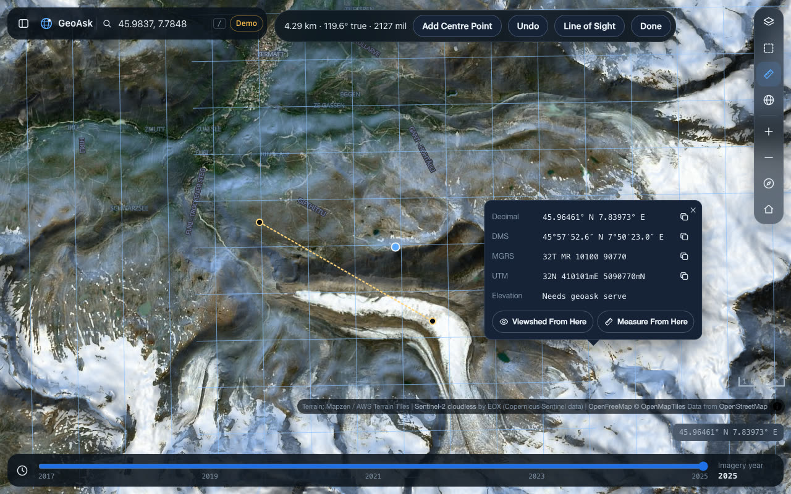

“What changed here since 2019?”
Change over time
Foundation-model embeddings (Clay) find change of any kind; spectral indices measure vegetation, water and built-up land.
Photo geolocation agent
GeoAsk reads the clues in a photo, checks them against open maps, satellite imagery and terrain, and answers with likely areas and a confidence. Add a clue and it narrows down. Then ask the map anything else.
The model reasons like an expert player, then checks what it thinks against real, open data instead of trusting its memory.
Scripts on signs, driving side, road markings, poles, plants, roofs, terrain, the sun and shadows.
OpenStreetMap for street and shop names, open reference photos, satellite views, elevation, sun position.
Up to three areas, each with a likelihood and a one-line reason. Never a single pin.
“There was a funicular nearby.” Another photo, a hint, a “not here”: the estimate tightens.
One chat, one model, every tool. Ask in your own words, draw a box, type coordinates, or run a tool straight from the map toolbar.
“What changed here since 2019?”
Foundation-model embeddings (Clay) find change of any kind; spectral indices measure vegetation, water and built-up land.

“How busy is this port?”
Vessels on every radar pass, day or night, through cloud, with unusual days flagged.

“What can be seen from here?”
From the Copernicus 30 m elevation model, allowing for Earth’s curvature.

“How steep is it?”
Elevation, slope and relief for any area.
“Show me it sharper”
Satellite views sharpened to 2.5 m, and generative enhancement of blurry photos, always labelled as viewing aids.

48N UG 6387 4975
MGRS grid, decimal, DMS and UTM coordinates, distance and bearing in mils, hillshade and 3D.
GeoAsk is model-agnostic. Choose in Settings, swap any time. The tools, data and checks stay the same.
git clone https://github.com/cweekiat/geoask
cd geoask
uv venv && uv pip install -e ".[serve,locate]"
geoask serve # http://127.0.0.1:8787/app/